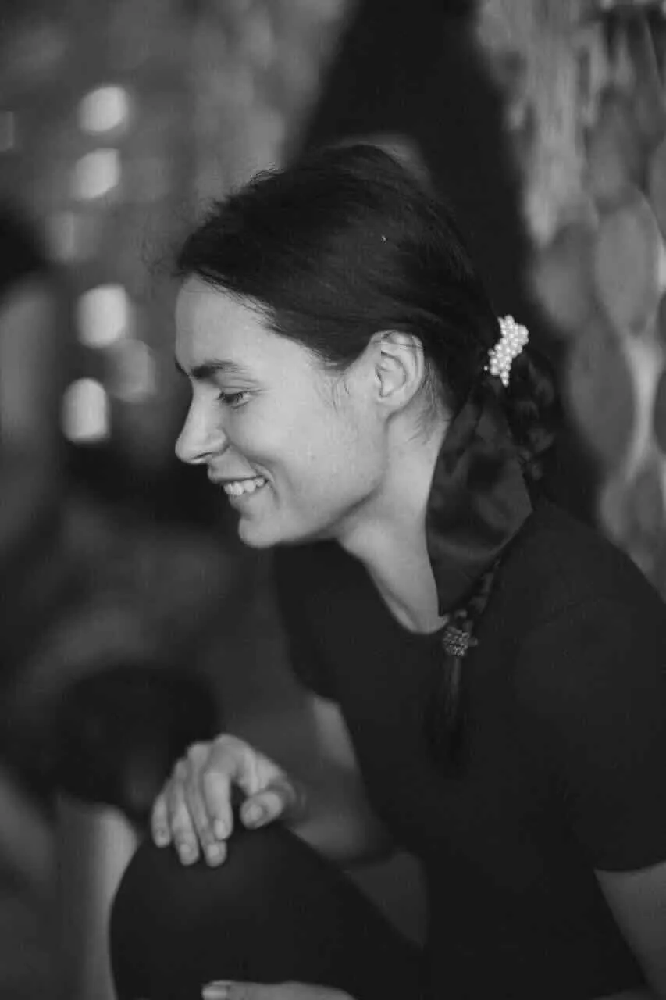

Сьорбати Можна
Відкритий урок
Сьорбати Можна
Відкритий урок
Як освоїти чайну церемонію з нуля
та за 3 місяці запустити перші платні зустрічі
Покроковий план, як вийти на дохід
1000–1500€на місяць

 Сьорбати Можна
Відкритий урок
Сьорбати Можна
Відкритий урок
Як освоїти чайну церемонію з нуля
Покроковий план, як вийти на дохід
Сьорбати Можна
01Сценарій перший
Купуєш чай, обираєш красивий посуд, пробуєш нові смаки.
Чаюєш сама або пригощаєш друзів.
Іноді показуєш це в Instagram.
Але замовлень на чайні церемонії немає.
Незрозуміло, що запропонувати людям, за яку ціну та як знайти гостей.
 Сьорбати Можна
Сьорбати Можна
02Сценарій другий
Знаєш, як обрати чай, підготувати посуд і простір.
Самостійно проводиш церемонію: зустрічаєш гостей, знайомиш із чаєм, заварюєш його та ведеш зустріч.
Маєш зрозумілу пропозицію: для кого церемонія, скільки триває та коштує.
Люди записуються й оплачують участь.
Ти розумієш, як розвивати цей напрям із фінансовим орієнтиром 1500 € на місяць.

 Сьорбати Можна
Сьорбати Можна03Що насправді їх розділяє
Між першим і другим сценарієм стоїть система з чотирьох кроків. Її можна вивчити.
Розумієш чай: види, якість, як обрати і заварити.
Впевнено ведеш зустріч: від посуду до атмосфери.
Для кого, скільки триває і скільки коштує.
Де шукати аудиторію і як зібрати перших учасників.
Саме цьому і присвячений курс.
Сьорбати Можна04Хто я
Перша чашка, і одразу рішення: пов'язати життя з чаєм.
Чайний клуб у Житомирі. Пішла з офіціантки в помічниці чайного майстра, на зарплату, меншу за чайові.
Чайна майстриня, потім керівниця клубу. А тоді вільне плавання: власні церемонії та фестивалі.
Церемонії у Франції, Іспанії та Польщі.
Чайний тестинг на 50 гостей: 25 літрів чаю і 8 чаїв одночасно.

Сьорбати Можна05Типові помилки
Купуєш ще один чайник замість того, щоб провести першу зустріч.
Церемонія без формату і ціни: це гостинність, а не послуга.
Обіцяли один чай, а налили інший. Без власного смаку важко бути експертом.
Аудиторія приходить через людей, заходи, фестивалі та спільні події.
Сьорбати Можна06Курс «Сьорбати Можна»
Від першої чашки до власної чайної справи.
Записані заздалегідь: дивишся у власному темпі.
Після кожного уроку, щоб знання закріплювались.
Глибокі розбори саме твоїх питань і твого шляху.
 Сьорбати Можна
Сьорбати Можна07Програма
Один модуль на тиждень. Уроки, тест і розбір на дзвінку.
Тест · 9 питань
Тест · 9 питань
Тест · 9 питань
Тест · 12 питань
Сьорбати Можна08Персональний підхід
Говоримо про твій досвід, цілі та формат, який тобі близький.
Модуль за модулем, з тестом після кожного уроку.
Глибоко занурюємось у твої питання: чай, церемонія, ціна, гості.
Є план: для кого, скільки триває і скільки коштує.

 Сьорбати Можна
Сьорбати Можна09Математика
Це не мрія, а кілька зустрічей на тиждень.
Приклад розрахунку. Ціна та кількість гостей залежать від міста і формату, витрати на чай і оренду окремо. Дві зустрічі на тиждень, і орієнтир досягнуто.
Сьорбати Можна10Вибір
Сценарій 01
Сценарій 02
Сьорбати Можна11Наступний крок
Місце для заклику
Тут буде твоя пропозиція: ціна, бонуси для перших учасниць, посилання або QR-код і дедлайн.
Записатися на курс →